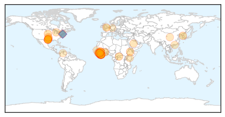
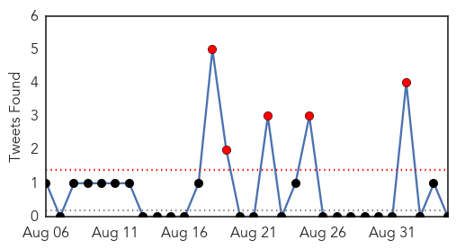

Ebola
30-Day Web Trend
0 alerts, 0 warnings

30-Day Twitter Trend
0 alerts, 0 warnings

Article Locations
Article Confidences

Top Articles:
- 1.000
- Q&A: Ahead of Seoul-Hosted GHSA Meeting, CDC Director Talks Ebola
- 1.000
- Ebola back in Africa, yet again – Village in Sierra Leone quarantined after the death of one woman
- 1.000
- Liberia: Ebola-Free, for a Second Time
- 1.000
- First Case of Ebola In Ethiopia Reported (Hara Ethiopia)
- 1.000
- Rapid test, vaccine may end Ebola outbreak
- 1.000
- 10 Frightening Facts About Ebola
- 1.000
- WHO declares Liberia free from Ebola -- again
- 1.000
- Texas Healthcare Worker Tests Positive for Ebola
- 0.999
- 200 Sierra Leone Residents to Receive Vaccination
- 0.999
- Liberia declared free of Ebola spread -- again: WHO
- 0.999
- WHO Declares Liberia Ebola-Free For The Second Time Around : LIFE : Tech Times
- 0.999
- Ithaca doctor talks about helping fight Ebola virus
- 0.999
- Ebola Spread Slows In Guinea But 'Much Remains To Be Done'
- 0.999
- Liberia Declared Ebola-Free Again
- 0.999
- W.H.O Declares Liberia Ebola-Free
- 0.998
- Liberia receives 2nd Ebola-freed certificate
- 0.998
- Ebola doctor calls for fatal flaws in Sierra Leone health system to be addressed
- 0.998
- Village of 1,000 quarantined after Ebola death in Sierra Leone - Sierra Leone
- 0.997
- Ghana Health Services still leaving no stone unturned with strategies to prevent Ebola
- 0.996
- Sierra Leone village in quarantine after woman dies of Ebola
- 0.996
- Lessons learned from Ebola could help in future cases
- 0.996
- Review cites problems at Texas hospital during Ebola crisis
- 0.995
- Lessons Learned From Ebola Could Help in Future Cases
- 0.995
- Review cites problems at Texas hospital during Ebola crisis
- 0.994
- Review cites problems at Texas hospital during Ebola crisis
- 0.986
- Texas Hospital Wasn’t Prepared for Ebola Crisis
- 0.976
- Keeping families connected during Ebola quarantine
- 0.976
- Failures of Dallas hospital during Ebola crisis detailed in new report
- 0.970
- WHO Announces Liberia Ebola-Free For Second Time This Year
- 0.964
- Mass. Doctor Who Survived Ebola Continues Fight Against Disease « CBS Boston
- 0.956
- Ebola: S/Leone quarantines whole village
- 0.952
- WHO Salutes Liberia For Halting Ebola Transmission
- 0.951
- Liberia declared Ebola-free
- 0.939
- WHO declares Liberia Ebola-free again
- 0.900
- The forest detectives: Searching for proof about forests and disease
- 0.851
- As Clinical RM hands over refurbished Blood Bank …94 Convalescent ebola Plasma available for administration « Awoko Newspaper
- 0.838
- Independent Review Says Texas Health Presbyterian Was Not Prepared For Ebola
- 0.810
- Biotech company might help Saudi Arabia with MERS
- 0.803
- From The KERA Newsroom: Ebola Missteps Explained; The Libre Initiative Mission
- 0.744
- President Koroma hosts World Medicine Summit chief
- 0.743
- President Koroma receives credentials from three new ambassadors
- 0.740
- President Ernest Koroma hosts World Medicine Summit chief
- 0.716
- Ebola UK school panic: Parents threaten to remove kids over teachers’ Kenya trip
- 0.698
- Princess of Asturias Award for religious order dedicated to Ebola patients in Africa
- 0.690
- This Neighbourhood Watch Group is determined to keep Ebola out
- 0.650
- Misdiagnoses are getting a closer look
- 0.561
- SLAJ disowns pseudo-media group
- 0.541
- More heartbreak for Ebola survivor after baby boy dies
- 0.531
- Playhouse Foundation hosts Post-Ebola Roundtable : The implications for Kono District
Top Tweets:
- 0.992
- Sierra Leone Village Quarantined After Ebola Death - TIME http://t.co/TCxnPRDter ebola EVD
- 0.940
- Mass. Doctor Who Survived Ebola Continues Fight Against Disease - CBS Local http://t.co/TtRenSuweV ebola EVD
- 0.899
- Sierra Leone News : Gambia Assures Continued Solidarity in Fighting Ebola - Awareness Times http://t.co/o0a86TIgtQ ebola EVD
- 0.841
- Review cites problems at Texas hospital during Ebola crisis - Fox News http://t.co/UfLJKc6V56 ebola EVD
- 0.810
- Unfortunate headline, but an important piece on how Ebola affects child health http://t.co/d7b3zaT8z7 Ebola
- 0.803
- Review Cites Problems at Texas Hospital During Ebola Crisis - ABC News http://t.co/25DuPgH4PA ebola EVD
- 0.803
- LIBERIA: "We Are Not Harmful," Ebola Survivor Tells Public - Global News Network http://t.co/XvG8u1FVqh ebola EVD
- 0.802
- Review Cites Problems at Texas Hospital During Ebola Crisis - NBC 5 Dallas-Fort Worth http://t.co/GdwSedW24Y ebola EVD
- 0.797
- More heartbreak for Ebola survivor after baby boy dies - U.S. News & World Report http://t.co/L4jH1AFHkp ebola EVD
- 0.789
- 50 people quarantined in the northern district of Kambia, Sierra Leone after recent death of Ebola patient http://t.co/4ERVpVWxa3
- 0.779
- Elimination of Ebola Virus Transmission in Liberia — September 3, 2015 Ebolafree http://t.co/HWz4jmlFy0
- 0.772
- RT: Active Ebola transmission continues in Guinea & Sierra Leone, but reported cases at lowest point in a year. @CDCMMWR htt…
- 0.716
- ProMedica Monroe Ebola report on social media a hoax - Monroe Evening News http://t.co/AcVCSpIPq6 ebola EVD
- 0.715
- RT: A village of almost 1000 people in Sierra Leone has been sealed off after a woman died of Ebola. http://t.co/1WFs2pf1nY
- 0.705
- RT: @WHO today starts an Ebola vaccination of hundreds of people in northern SierraLeone where almost 1,000 people have been…
- 0.681
- More Heartbreak for Ebola Survivor After Baby Boy Dies - ABC News http://t.co/CIw6p3SzEX ebola EVD
- 0.640
- 4 Sept - news pouch on avianflu avianinfluenza Ebola EbolaResponse MERS is here: http://t.co/WyVDlgrk9l
- 0.611
- American Ebola survivor looks back: 'God uses people all the time' - Atlanta Journal Constitution http://t.co/2z1rUJlmFX ebola EVD
- 0.540
- SierraLeone village in quarantine after Ebola death, nearly 1,000 people http://t.co/ii6AdeYS5i
Unknown
30-Day Web Trend
0 alerts, 3 warnings

30-Day Twitter Trend
5 alerts, 0 warnings

Article Locations
Article Confidences
Top Articles:
- 0.996
- Legionnaires' Disease Outbreaks Continue Across the Country
- 0.985
- CDC closer to finding the source and transmitter of the disease
- 0.952
- Rabies found in bats north of Saskatoon, humans exposed in one case
- 0.941
- Unknown Illness Strikes 100+ Students in North Carolina
- 0.940
- Suspected norovirus clears out Person County schools
- 0.935
- 11 Sick in Montana Salmonella Outbreak
- 0.917
- Chicago Tribune
- 0.917
- Chicago Tribune
- 0.917
- Chicago Tribune
- 0.917
- Chicago Tribune
- 0.915
- First polio outbreak in Europe in 5 years
- 0.889
- Baby deaths not due to bacteria: KZN health dept
- 0.887
- Hot water back on at Melrose Houses after discovery of Legionella
- 0.885
- Hendra Virus Confirmed Near Lismore, New South Wales
- 0.870
- Ministry: Water-borne illnesses under control
- 0.866
- An Afghan refugee boy sits on a truck after arriving at a United Nations High Commissioner for Refugees registration centre in Kabul, Afghanistan
- 0.866
- Afghan refugee children, returning from Pakistan, watch a video clip at a mines and explosives awareness program at a UNHCR registration centre in Kabul, Afghanistan
- 0.820
- Mānoa: Statewide immunization rates for HPV lagging
- 0.809
- Heads up: Seneca Valley Virus returns to the Midwest
- 0.796
- Seniors complex takes precautions after confirmed case of Legionnaires’ disease
- 0.794
- Dr. J. Donald Millar, 81, Dies; Led C.D.C. Mission That Helped Eradicate Smallpox
- 0.791
- Squirrel Tests Positive for Plague in South Lake Tahoe Area
- 0.789
- Statement: Foot and mouth disease status in Zimbabwe
- 0.772
- Los Chilangos E. coli Outbreak Updated
- 0.752
- South Sudan: Patients dying after fighting compels medical staff to leave hospital
- 0.750
- NBC29 WVIR Charlottesville, VA News, Sports and Weather
- 0.729
- SA on alert after foot-and-mouth outbreak in Zim
- 0.718
- Finding a way forward in the fight against prion disease
- 0.712
- 2 polio cases found in Ukraine, caused by mutated virus in vaccine
- 0.712
- Health staff await tests after Legionnaires’ disease confirmation
- 0.707
- Rise in Hong Kong medical staff suffering from HIV - but should they be allowed to operate on patients?
- 0.703
- Experts: Unlikely German sailor fell ill in Rio's water
- 0.690
- The Caledonian-Record
- 0.689
- Montana Salmonella Outbreak Traced To Cucumbers
- 0.685
- KZN Health Department denies bacteria caused babies’ death
- 0.668
- Britannica.com
- 0.667
- Renewing health districts for advancing universal health coverage in Africa
- 0.665
- Shortage of health workers to end by 11th Plan
- 0.647
- County reports two rabies incidents in one week
- 0.639
- Experts: Unlikely German sailor fell ill in Rio’s water
- 0.636
- Experts: Unlikely German sailor fell ill in Rio's water
- 0.575
- What can be done to tackle multi-drug resistant TB?
- 0.569
- Google updates health condition feature with more than 900 diseases
- 0.557
- How much water should we drink each day to stay healthy?
- 0.547
- Mom worries about source of stomach parasite cases
- 0.533
- Could a $14 test prevent the spread of MRSA?
- 0.521
- Essentia awarded grant to make communities healthier
- 0.521
- NHI: Doing things differently in KZN
- 0.519
- The most from the coast
- 0.511
- Gastritis symptoms in prison prompts probe
Showing top 50 articles...
Top Tweets:
- 0.713
- AFD Blog `CDC: Making a Candidate Vaccine Virus For HPAI Avian Flu' http://t.co/Vpx5f4lTlS
- 0.602
- RT: Si vas a promover la adopción de animales, pero te pones como un vendedor de Herbalife, lo único que logras es cansar y esp…
- 0.553
- Saudis report +6 MERS cases, 1 death today. 4 cases in/near Riyadh, 2 closer to Mecca. 1 case is expat health worker http://t.co/h4WNT6tXLv